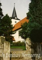
De Evang.Luth.Kerk te Bad Sachsa, Duitsland, waar onze stamvader Christoph Pilgram woonde, geb ong. 1580
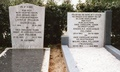
Twee broers Pelgrim e.e., Jan Pelgrim en Andreas Adrianus- (Begraafplaats Beukenhof Schiedam) stam F
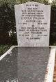
Leentje Pelgrim-Hamerslag, *01-01-1904, +19-06-1993, en Jan Pelgrim, *17-12-1903, +28-01-1994 (Begraafplaats Beukenhof Schiedam) stam F.
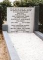
Andreas Adrianus Pelgrim, *29-04-1910, +24-10-1969 en Wilhelmina Pelgrim-Meijvogel, *20-10-1914, +03-02-1998 (Begraafplaats Beukenhof Schiedam) stam F
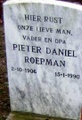
Pieter Daniël Roepman, *02-10-1906, +15-01-1990, overgrootvader van kleinkinderen
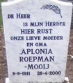
en Apolonia Roepman-Mooij, *08-09-1911, +28-04-2000, overgrootmoeder van kleinkinderen
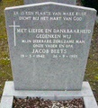
Jacob Beets, *19-03-1942, +26-09-1995, grootvader van kleinkinderen Pelgrim-Beets
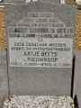
Albert Cornelis Beets, *08-08-1889, +10-04-1970 en Antje Beets-Nieuwkoop, *17-07-1899, +04-07-1989, overgrootouders van kleinkinderen Pelgrim-Beets
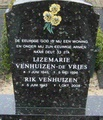
Lizemarie Venhuizen-de Vries, *01-06-1945, +05-05-1996 en Rik Venhuizen, *05-06-1943, +01-10-2008, grootouders van kleinkinderen Pelgrim-Venhuizen
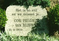
Cok Pelgrim-van Rijswijk, *21-08-1924, +18-08-1999 (Begraafplaats Beukenhof Schiedam) stam F
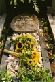
Lodewijk Louis Clausing, *11-08-1949 Schiedam, +12-11-1998 (Begraafplaats Beukenhof Schiedam) stam F
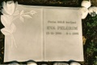
Eva Pelgrim, *12-10-1905, +09-01-1999, zorgde voor haar ouders; Jan Pelgrim en Marrigje Pelgrim-de Jong (Begraafplaats Beukenhof Schiedam) stam F.
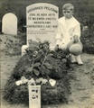
Johannes Pelgrim emigreerde vanuit Rotterdam naar Amerika, kwam aan 17-03-1903. Op foto naast graf Abraham Pelgrim, *13-12-1904, +06-01-1972. Johannes gravesite at Fair Lawn Cemetry, Maple Avenue, Fair Lawn, New Jersey, USA. Stam-F
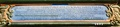
Dit bord hangt boven ingang kerk, ter herinnering aan o.a. nazaat Christophorus Pilgram
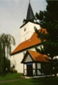
Positie van het herinneringsbord.